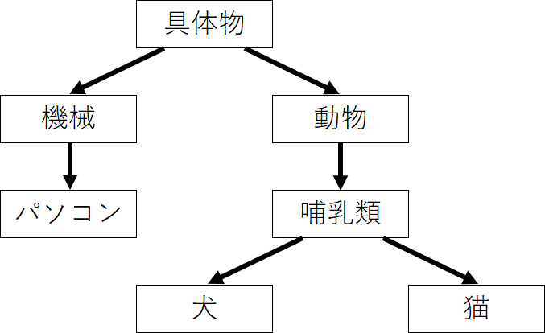

単語分散表現
Contents
単語分散表現#
単語分散表現とは、単語の意味を低次元の実数値ベクトルで表現することです。
機械学習・深層学習モデルは、ベクトル（数値の配列）を入力として受け取ります。テキストを扱う際、最初に決めなければならないのは、文字列を機械学習モデルに入力する前に、数値に変換する（あるいはテキストを「ベクトル化」する）ための戦略です。
単語の持つ性質や意味をよく反映するベクトル表現を獲得することは、機械学習・深層学習を自然言語処理で活用するために重要なプロセスです。
類似性: ある概念を表現する際に、ほかの概念との共通点や類似性と紐づけながら、ベクトル空間上に表現します。
単語類推: 分散表現では異なる概念を表現するベクトル同士での計算が可能です
シソーラスによる手法#
「単語の意味」を表すためには、人の手によって単語の意味を定義することが考えられます。
シソーラス(thesaurus)と呼ばれるタイプの辞書は、単語間の関係を異表記・類義語・上位下位といった関係性を用いて、単語間の関連を定義できます。
\[
car = auto \ automobile \ machine \ motorcar
\]

この「単語ネットーワーク」を利用することで、コンピュータに単語間の関連性を伝えることができます。しかし、この手法には大きな欠点が存在します。
人の作業コストが高い
時代の変化に対応するのが困難
言語は常に進化しており、新しい単語や意味が生まれては消えていくので、シソーラスを最新の状態に保つのは難しいです。
単語の些細なかニュアンスを表現できない
単語が持つ複数の意味を区別することは難しい
単語間の関連性はシソーラスでは静的なものであり、動的な文脈や知識の流れを反映しきれないことがあります